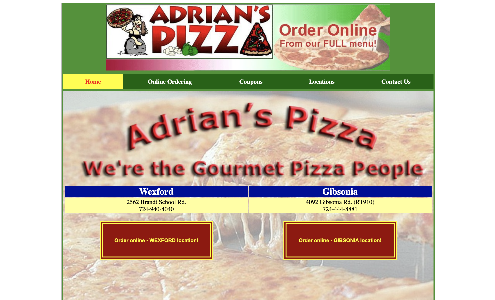
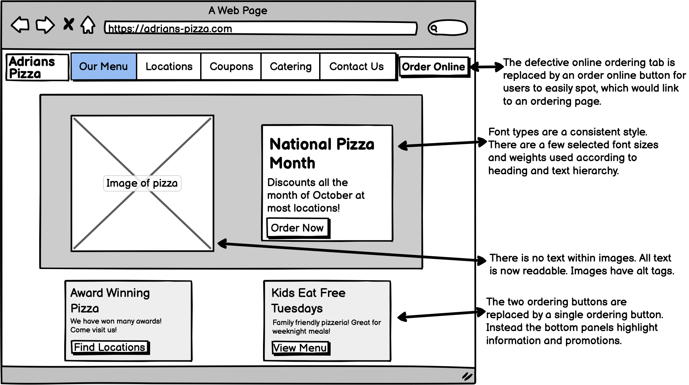
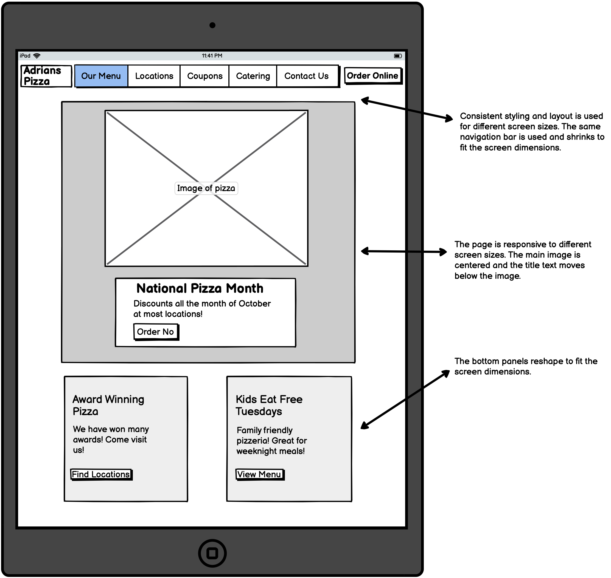
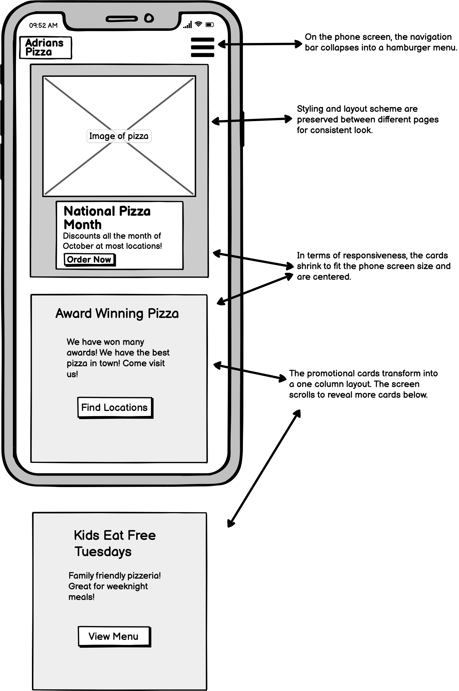
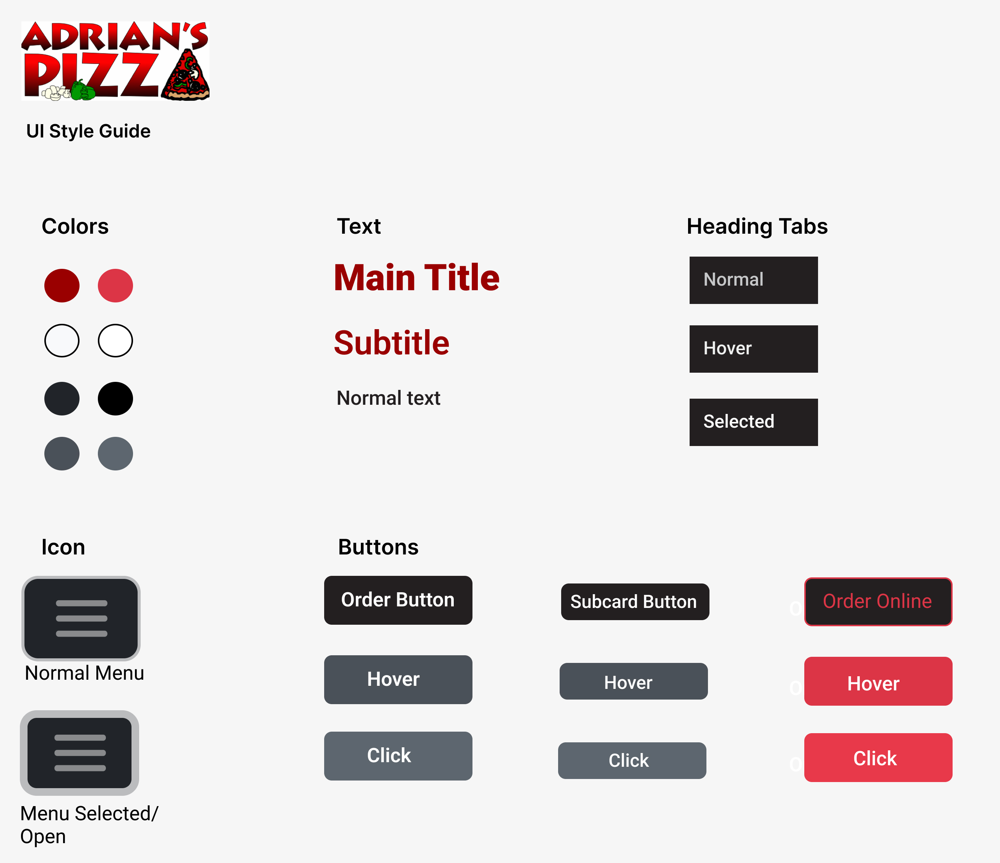
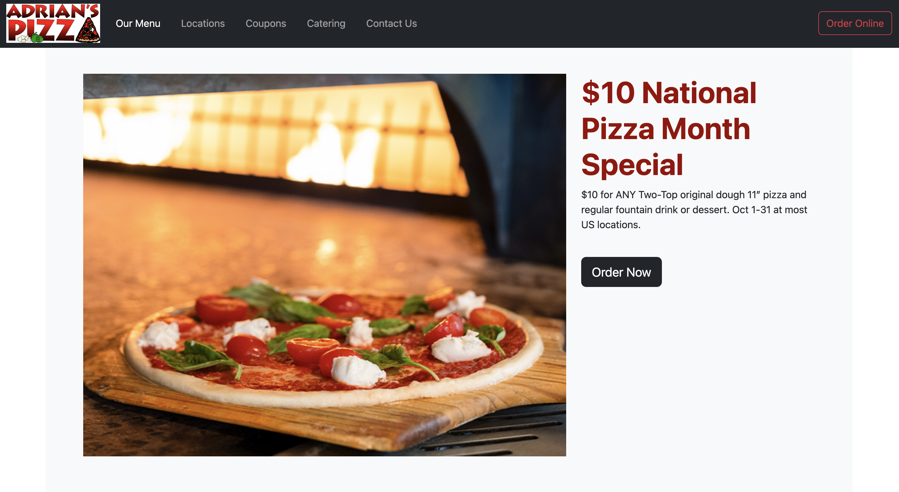

Responsive Redesign
Overview
For this project, my goal was to redesign a website that had serious flaws related to usability and accessibility standards. I went through the entire workflow of a redesign, starting from identifying flaws, creating low-fidelity sketches, composing a style guide, creating high-fidelity prototypes for different screen sizes, and finally a building redesigned website. I chose to redesign a local pizza restaurant’s website called Adrian’s Pizza because I have interacted with it in the past and was not satisfied with my experience, so I think this website could benefit from a redesign.
Webpage Usability Issues

This is the original webpage. I identified several usability issues with the website related to efficiency, learnability, and memorability.
- The website uses inconsistent fonts with multiple styles (drop shadow, plain black text, embedded in an image), which hurts readability.
- The page has text embedded in images which is blurry, and the red title with drop shadow has poor contrast with the background.
- The website has poor memorability. There is no constant color scheme and company branding colors are not clear to customers.
- The page is not responsive to resizing for different screen sizes, making it unusable on devices besides laptops.
- The two separate buttons for ordering at different locations are potentially confusing to users, who may click on the first order button they see according to scanning hierarchy-most likely the one on the left.
- There is a tab for online ordering on the navigation bar which links back to the main page, so it doesn’t cause any visual change, potentially causing users to think the link is broken.
Low-Fidelity Wireframes
To begin my redesign process, I began by sketching some low fidelity wireframes of a redesigned website for multiple screen sizes: computer, ipad, and phone. This is an important step for making a website responsive to design different screen configurations for different devices. I carefully considered what needed to change between devices while keeping a consistent design feel. Notably, on the phone screen the top navigation bar was condensed into a hamburger menu.
Computer
Ipad
Phone
Style Guide
Next, I constructed a style guide to use when constructing high-fidelity prototypes. It details colors, heading and body text styles, and buttons and tabs. I decided to use a color palette of white, and black for a sleek design feel with highlights of red for some color pop.
High Fidelity Prototyping
After constructing a style guide, I used it to compose high-fidelity protoptypes, again for each of the screen sizes. I kept the page layouts consistent from the low-fidelity wireframes as the components worked well together in the mockup without much adjustment.
Computer

Ipad

Phone

Final Redesigned Page

Finally, I created a responsive webpage according to my high-fidelity prototypes. The final result can be viewed here. I was able to replicate my high-fidelity prototypes pretty closely on the final webpage. The website is also responsive to different screen sizes and adjusts the layout accordingly.
Summary
This project was great practice in the workflow of redesigning a website. The visual design of a webpage plays a large role in the user's experience. The responsiveness of a page is a crucial part of reaching users who access pages on different devices. Creating a great responsive webpage is a difficult task, and I have a newfound appreciation for the hard work that goes into creating well-designed webpages.